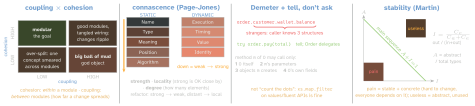

design · folio
In one line: Patterns trade indirection for changeability; these principles say what changeable code looks like: high cohesion, low coupling (named by kind — connascence), talk to friends, tell don’t ask, compose, one home per piece of knowledge, build only what’s needed, the right class for each responsibility (GRASP), dependencies toward stability.
Download PDF Print view LaTeX source


Coupling & cohesion (Constantine, structured design) Coupling, worst→best: content (reach into internals) · common (shared globals — .shared state) · external (shared format/device) · control (pass a flag that picks the callee’s branch) · stamp (pass a whole struct, use one field) · data (pass only what’s used).
Cohesion, worst→best: coincidental (Utils) · logical (same category: handle(type:)) · temporal (runs at the same time: setUpEverything) · procedural · communicational (same data) · sequential (output feeds next) · functional (one well-defined task).
Connascence — a vocabulary for coupling Connascent = changing one forces changing the other. Name (rename → callers), Type, Meaning (status == 2 means shipped → use an enum), Position (argument order → labels, a struct), Algorithm (client + server hash the same way → share one implementation), Execution (configure() before start() → make it an init), Timing (races), Value (values that must change together — invariants), Identity (must be the same instance, e.g. one NSManagedObjectContext).
Law of Demeter · tell, don’t ask LoD (Holland/Lieberherr, 1987): “only talk to your immediate friends” — the 4 allowed targets in the picture. A train wreck couples the caller to every intermediate type. Fix: hide delegate (order.pay) or pass in what is needed. Tell, don’t ask: don’t pull state out, decide and push it back — tell the data’s owner to do it (= Information Expert).
Composition over inheritance (GoF, 1994) Inheritance is white-box reuse: the subclass depends on the base’s implementation. Fragile base class: a harmless base change breaks subclasses (Bloch’s InstrumentedHashSet: addAll calls add, so the override counts twice). Composition = black-box, swappable at runtime, no LSP traps. Swift nudges you: final, open to subclass across modules, protocols + extensions, value types. Inherit only for a true is-a with a stable contract.
// ASK: train wreck, logic outside the data
if order.customer.wallet.balance >= total {
order.customer.wallet.balance -= total }
// TELL: the data's owner does it (Information Expert)
struct Wallet { private(set) var balance: Decimal
mutating func pay(_ x: Decimal) throws {
guard balance >= x else { throw PayError.insufficient }
balance -= x } }
try order.pay(total) // Order -> customer -> wallet, hiddenRemember Cohesion in, coupling out · weak and local connascence · talk to friends, tell them · compose · one home per fact · build what’s needed · point at stability.
GRASP — Larman’s 9: who gets the job?
| Information Expert | the class that has the data: Cart.total, not the VC |
| Creator | B makes A if B contains, uses or has A’s init data |
| Controller | first non-UI object handling a system event (use case, VM) |
| Low Coupling | pick the assignment that adds the fewest dependencies |
| High Cohesion | keep each class focused; reject what dilutes it |
| Polymorphism | varies by type → polymorphic call, not a type switch |
| Pure Fabrication | invented non-domain class: Repository, ImageCache |
| Indirection | an intermediary to decouple: protocol, Adapter, Coordinator |
| Protected Var. | hide each predicted change behind a stable interface |
DRY · KISS · YAGNI DRY (Hunt & Thomas, 1999): “every piece of knowledge must have a single, unambiguous, authoritative representation” — knowledge, not text: identical lines encoding different rules stay separate. The wrong abstraction (Sandi Metz): “duplication is far cheaper than the wrong abstraction” — a shared helper growing per-caller flags: inline it back. Abstract at the rule of three. KISS: the simplest design that works. YAGNI (XP): don’t build for a guessed future (Fowler: cost of build, delay, carry, repair) — but keep code easy to change.
Least astonishment · separation of concerns POLA: code does what its name promises — no network I/O in a getter; sort() mutates, sorted() returns (Swift API Design Guidelines, which also require documenting a computed property that is not O(1)). SoC (Dijkstra, 1974): one concern per part — view / state / domain / persistence; the root of SRP and layering.
Dependency direction (Martin’s package principles) ADP: no cycles in the module graph. SDP: depend in the direction of stability (towards low I). SAP: as abstract as it is stable, so it can still be extended. Stable = many dependents, hard to change — not “rarely edited”. iOS: Feature → DomainInterfaces ← Networking.
Traps
- LoD ≠ “count the dots”; DRY ≠ “no repeated lines”.
- GRASP Controller ≠
UIViewController. - Name the kind: control coupling, temporal cohesion, connascence of position.